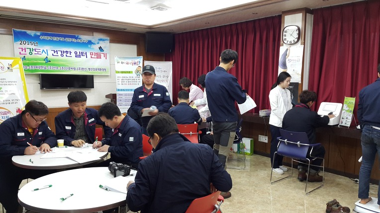

광주서구보건소, (주)대광판넬 임직원 건강상담과 건강검진 방문 실시
지난 4월 14일, 광주 서구보건소에서는 '2015년 건강도시 건강한 일터만들기'의 일환으로
(주)대광판넬 광주본사를 방문해 주셨습니다.

이날 임직원들의 건강검진 체크와 건강검진, 그리고 금연상담까지 진행되었는데요.
특히 건강검진 체크와 건강검진은 운동, 흡연, 음주, 영양 상태, 체지방측정, 스트레스,
복부둘레, 혈압, 혈액검사(콜레스테롤, 중성지방, 간기능, 혈당)까지
'건강한 일터 만들기'를 위한 세심한 배려가 돋보였습니다.



(주)대광판넬은 대광과 함께하는 임직원들의 건강이
최고의 품질, 최고의 제품생산의 밑거름이라 여기며,
작업환경 개선과 주기적 건강체크 등의 '건강한 대광판넬'을 만드는데 더욱 노력할 것입니다.